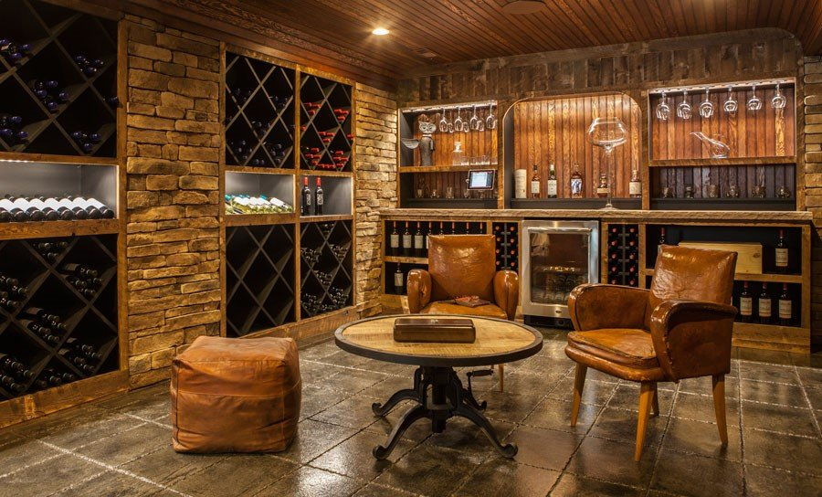

MITO es un espacio de casi 300 metros cuadrados dedicados al vino y otras bebidas.
En la vinoteca contamos con una destacada variedad de bodegas de la mayoría de las regiones vitivinícolas de la Argentina. Hay vinos, licores y destilados; y nuestra característica distintiva es la cantidad de bodegas con las que trabajamos. Esas bodegas que están por fuera de los circuitos masivos de comercialización encuentran aquí un lugar ideal para dar a conocer sus creaciones.
Tenemos también un sector de novedades y nuevas incorporaciones, con estuches y presentaciones especiales , y algunos productos regionales y aceites.
La atención es familiar y nos encanta que vengan a conocer nuestro espacio.
Promo del mes

$ 2599

$ 3599

$ 5599

$ 5599
$ 5599

$ 5599
4 Ideas creativas para reciclar tus botellas de vino
Si eres un amante del vino, es posible que más de una vez te hayas preguntado qué hacer con todas las botellas de vino que se acumulan para reciclar y que te da pena tirar ya que no tienes ideas creativas para reciclarlas. Una de las cosas que nos permiten las manualidades, es utilizar y reciclar objetos que ya tenemos en nuestro hogar y transformarlos.
Así pues, en vez de tirar todas estas botellas, ¿no es mejor intentar ser un poco más productivos y buscar una nueva útilidad para tus botellas vacías? En este post te vamos a dar 4 ideas geniales para reciclar tus botellas de vino de manera casera y darles un nuevo uso.
Los floreros, sobre todo de vidrio, pueden llegar a ser realmente costosos y frágiles. Así, en vez de gastar dinero en adquirir nuevos recipientes para depositar ramos y otros ornamentos, puedes utilizar las botellas de vino vacías que tengas en casa. Quizás es la forma más clásica de reciclar botellas de vidrio…pero aún así sigue teniendo su gracia si sabes hacerlo bien.
Siguiendo con las flores y las plantas, también puedes reutilizar las botellas de vino como macetas o terrarios. Dentro de tu casa, muchas veces tener un envase de plástico para sembrar tus plantas, no es muy glamuroso o decorativo. Una posible solución es llenar una botella con piedras y arena y después introducir algunas semillas o pequeñas flores para hacerlas crecer directamente en el interior de la botella.
Otra forma creativa de reciclar botellas de cristal es utilizarlas de portavelas para iluminar tus noches de verano en la terraza. También puedes utilizarlas como lámparas o incluso decorarlas con guirnaldas de luces de distintos colores y conseguir un toque especial para cualquier rincón, dentro o fuera de casa.
Si eres una persona artística, amante del arte y la pintura, considera utilizar tus habilidades para hacer mejor uso de las botellas. Puedes utilizar las botellas como lienzo y pintarlas de diferentes temáticas: con colores atractivos, flores, estrellas… o incluso podéis envolverlas con hilo de rafia para conseguir una decoración más especial.